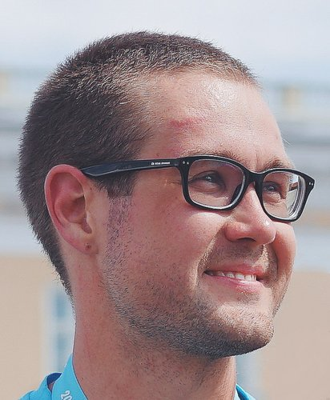

Как я становился разработчиком
- 2 сентября изучил основные теги HTML
- 10 сентября освоил приемы верстки
- 11 сентября начал изучать CSS
Начинающий frontend-разработчик и веб-верстальщик
Привет! Меня зовут Игорь, мне 34 года и я из Санкт-Петербурга
Окончил Санкт-Петербургский электротехнический университет по направлению "Радиотехника"
Работал инженером-радиотехником, инженером по тестированию ПО
Увлекаюсь фотографией, бегом, плаванием